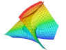
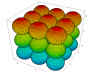
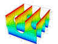
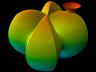
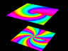

DPGraph: Dynamic Photorealistic 3D Graphing Software for Math and Physics Visualization



The world's most powerful software for math and physics visualization. Create beautiful, interactive, dynamic, photorealistic 2D, 3D, 4D, 5D, 6D, 7D and 8D graphs. So easy to use that even junior high and senior high students have had their graphs published. Includes hundreds of examples contributed by users from around the world.
Over two million mathematicians, physicists, teachers and students at over 1,000 colleges, universities and K-12 schools worldwide are already licensed.
Optimized for the internet -- search for DPGraph using your favorite search engine to find ways that people are using DPGraph for both classroom and distance learning. Used for pre-algebra, geometry, trigonometry and general physics, through multivariable calculus, field theory, quantum mechanics and gravitation.
Use time and color as extra dimensions (to create motion or encode momentum, for example). Use the scrollbar to vary parameters in realtime, to slice through graphs, or to vary transparency. Programmed entirely in assembly language for maximum speed.
Graph functions, equations, conic sections, planes, spheres, toruses, parametric curves and surfaces, implicit equalities and inequalities, volume intersections, volumes of integration, vector fields, surfaces of revolution, equipotential surfaces, and much more, in rectangular, polar, cylindrical, or spherical coordinates.



COMMON ERRORS: The seven most common mistakes when creating graphs in the EDIT dialog box are:
- leaving out asterisks for multiplication;
- Leaving out equals signs or inequality signs;
- Leaving out the parentheses for lists;
- Trying to use equalities in intersections (DPGraph can only intersect inequalities, i.e. regions of space);
- Putting a space inside the two-character symbols :=, >=, or <=;
- Using the parametric variables u or v in implicit graphs;
- Using the implicit variables x, y, z, r, theta, rho, or phi in parametric graphs.
- graph3d( 3x = z^2 )
- graph3d( x^2+y^2 )
- graph3d( x=1, y=1 )
- graph3d( x=1 & y=1 )
- graph3d( z^2> =x^2 )
- graph3d( z=u^2+v^2 )
- graph3d( rectangular(x,y,sin(x+y)) )
- graph3d( 3*x = z^2 )
- graph3d( z = x^2+y^2 )
- graph3d( ( x=1, y=1 ) )
- graph3d( x>1 & y>=1 )
- graph3d( z^2 >= x^2 )
- graph3d( z=x^2+y^2 )
- graph3d( rectangular(u,v,sin(u+v)) )
- graph3d.resolution := 30
- graph3d.stepu := 50
- graph3d.stepsv := 50
- graph3d.view:=top
- graph3d.perspective:=false
- graph3d(z=3*sin(x*y))
- Method 1: click on START - SETTINGS - CONTROL PANEL - ADD/REMOVE PROGRAMS, then scroll to DPGraph in the window, select it, and click on ADD/REMOVE.
- Method 2: click on START - PROGRAMS - DPGRAPH - UNINSTALL.
Wrong:
Right:
INEQUALITIES: When graphing an inequality, such as GRAPH3D( X>1 ), remember that "blue is true"; the bluest side of the graph is the region of space for which the inequality is true, the reddest side of the graph is the region of space for which the inequality is false. If the inequality is true for the surface itself, as in GRAPH3D( X>=1 ), then the bluest side is pure blue; if the inequality is false for the surface itself, as in GRAPH3D( X>1 ), then the reddest side is pure red.
DEFAULTS.DPG: With experience you may find the following technique useful when exploring a new surface. OPEN the file DEFAULTS.DPG, go to EDIT, modify the default equation, and then EXECUTE. Since all of the options are already in DEFAULTS.DPG they can be changed with very little typing. If you like, SAVE the modified file under a different name and it will be ready for future viewing and adjustments.
RESOLUTION: The easiest way to improve the appearance of some graphs is to increase the resolution. The default resolution is 21 by 21 by 21 for implicit graphs, and 40 by 40 for parametric surfaces. To change the resolution for implicit graphs, use the EDIT dialog box to insert a line such as the following before the GRAPH3D command:
For parametric surfaces:
You may find it useful to use the technique described in the previous section on DEFAULTS.DPG
COPYING A GRAPH TO THE CLIPBOARD: Click on CLIPBOARD to copy a picture of the graph to the clipboard. To copy a picture of the entire window (including the border, etc.) to the clipboard, simultaneously press down the ALT and PRINTSCREEN keys. To copy a picture of the whole screen to the clipboard, press PRINTSCREEN.
COPYING A GRAPH INTO ANOTHER APPLICATION: If the other application supports pasting, first copy the graph to the clipboard. Then click on EDIT in the other application, then click on PASTE.
PRINTING A GRAPH: First copy the the graph to an application, such as Word or Paint, that supports printing. Then click on FILE in the other application, then click on PRINT.
FILE FORMAT: DPGraph files have a file type of .DPG. There are two kinds of DPG files: binary and ASCII. DPGraph can read and write either type of DPG file, but the DPGraph Viewer can only read binary DPG files. Binary DPG files are compressed and contain error detection information for more reliable transmission. ASCII DPG files are readable and editable by Notepad and many other text editors. Each line in the file is a separate command for DPGraph. For example, a file might look like this:
Each command must start on a separate line. The GRAPH3D command must be the last command.
UNINSTALLATION: There are two ways to remove DPGraph from your hard disk drive.